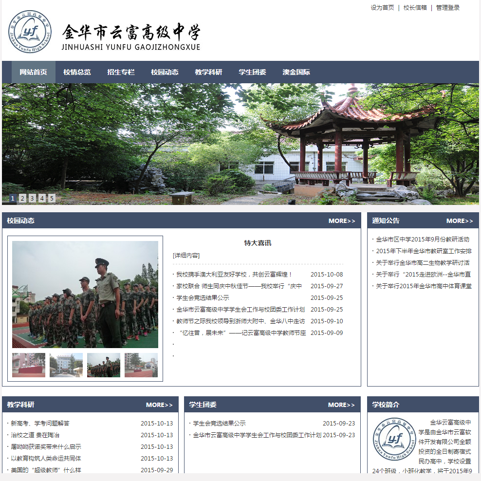

实习经历
浙江超牛信息技术有限公司前端工程师2015.05-至今
金牛筹是一个集股权众筹、奖励众筹、公益众筹等模式于一体的专业众筹网站，任职期间，负责金牛筹前端开发工作：
PC端：跟据设计图完成首页、项目发布、项目详情、投资订单、关于我们、帮助中心、客服中心等页面，使用jQuery来实现前端组件及数据交互，网站兼容主流浏览器：IE8、fireFox、Safari、Chrome。
移动端：内嵌于微信，目前已完成奖励众筹、股权众筹的项目展示及投资流程，使用zepto实现数据的交互及动态效果。
金牛筹网站地址：http://www.jinniuchou.com 移动端需通过微信公众号：金牛筹网站
项目经验
个人主页（哈尔的移动城堡）
参考UE设计、五百丁等网站独立设计、编码，目前已完成首页、HTML简历两个模块，后续将开发留言板、博客等功能。
哈尔的移动城堡：http://www.fdyxq.com
北京晨辉投资官网
高精度还原设计稿，主要实现首页“成功案例”幻灯片效果，通过本项目学会了写普通的js图片轮播效果。
晨辉投资网站地址：http://www.morningbright.com

金华市云富高级中学
独立设计完成了金华市云富高级中学官网的前端开发工作，该网站具有校园动态、在线留言、教学科研等模块。
本网站是接手的第一个项目，也由此学会了如何设计整个网站的排版、色彩， 对HTML、CSS、jQuery有了实践性的掌握。
云富中学网站地址：http://jhyfgz.com

专业技能
HTML(5)
知晓语义化，能够熟练手写符合w3c标准的HTML页面，了解HTML5新增标签，目前正在学习HTML5地理定位、Web存储。
CSS(3)
熟练使用CSS对网页进行布局，了解模块化CSS，喜欢使用CSS3提升用户体验。
JavaScript
了解原生Javascript，掌握jQuery，熟悉AngularJS、BootStrap、Arale等前端框架，也正在学习SeaJs以提升js模块化技能。
移动端/微信
熟悉移动端rem布局，了解利用@media screen实现网页布局的自适应，熟悉Zepto.js移动Javascript框架。
其他
熟悉Less等CSS预处理器
有svn版本管理工具使用经验
了解前端安全、性能优化方面的一些知识
熟悉Photoshop、Brackets、Notepad++、Sublime Text等常用网页制作软件
教育背景
浙江师范大学软件工程2012.09-至今
曾获奖项：
浙江师范大学优秀毕业生、学子英才
连续三年获校三等奖学金
多次获得三好学生、优秀学生干部、优秀团员等荣誉称号
浙江师范大学软件服务外包竞赛二等奖
自我评价
善于在生活中学习，看到网站酷炫的动画效果，总会细细品尝，收藏学习；
完美主义者，对自己的作品要求较高；
乐观向上，富有团队精神，善于沟通、交流，有较强团队协作和组织能力；
具有独立思考和自主学习的能力，有一定的抗压性，在困难面前有很好的分析能力和解决问题的能力。